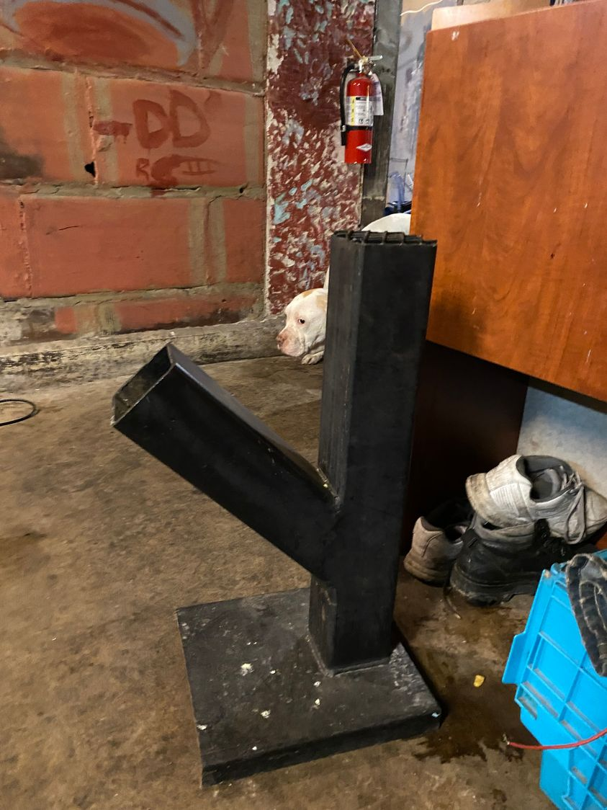

Timeline photos
Yesterday, a homeless friend of mine sold me a knife, Bluetooth speaker, some charging blocks and charging cords for $15. That money was most likely going to be used to buy drugs. I'll be giving those items out to people who need them.
Then I bought a Blu-ray player and a person's entire collection of Blu-ray movies for $40. That money was probably going to be used to buy drugs and alcohol. I'm setting up a TV room for homeless people to see if it has a calming effect on some of my more agitated and anxious homeless friends.
Then another person wanted to sell me this old, yet interesting, propane heater. I told him to just trade it for drugs. Someone would sure be willing to trade some drugs for this heater. He said he didn't want drugs. Considering he steals everything else, I still am not sure what he wanted that money for. I didn't buy the heater.
The picture here is of a rocket stove I bought from a homeless person. After buying it I learned that, I believe, Friends in Tents had this made for homeless people. They gave it to one person. Another homeless person stole it from that first homeless person and then sold it to me. I will be cementing it in the ground and giving it back to the homeless community.
Pretty much everything I buy from homeless people goes back to homeless people. I rarely have personal needs for most of this stuff.
This entire game used to annoy me. Now I'm much more accepting of it. This is a community with no money. The little money that comes into the community through social security and disability instantly gets gobbled up by drug dealers and those underground slot machine places that the street calls: Tap Tap.
So, merchandise becomes currency. It's a true barter and trade economy. They make some cash off of people like me and Facebook Marketplace.
Doing this work long enough, you eventually come to accept the reality of this situation. And you just hope that eventually the items you put out into the homeless community find their way to people who need them. True giving is the practice of letting go of the item you give. Once it leaves your hands you have no say in what happens to it. There is great spiritual learning that comes with true giving.
When you give a tent, coat, hat or gloves to a homeless person you have no way of knowing if the person you gave them to will be the actual person who uses them. They very possibly will either end up stolen or traded.
This is a basic, inevitable result of a community with no money. They can't buy things. So they steal and trade. To think that something else would happen is a naive misunderstanding of humanity.
I now have developed a more spiritual perspective to it all.
I think of how great spiritual masters have always taught us to let go of physical belongings. They become chains that control us. We don't own our things. Our things own us.
Homeless people practice this all the time. Sometimes they are forced to practice it when their belongings (which were usually either given to them or stolen) are taken. Or they are willing to let go of them altogether. They have learned that they need almost nothing to live. Everything they need is available to them whenever they need it.
The Buddha renounced his princely title and became a monk, depriving himself of worldly possessions in the hope of comprehending the truth of the world around him. I think homeless people are much closer to this than all of us in traditional society.
We just need to work on one or two more physical traps homeless people still have to let go.